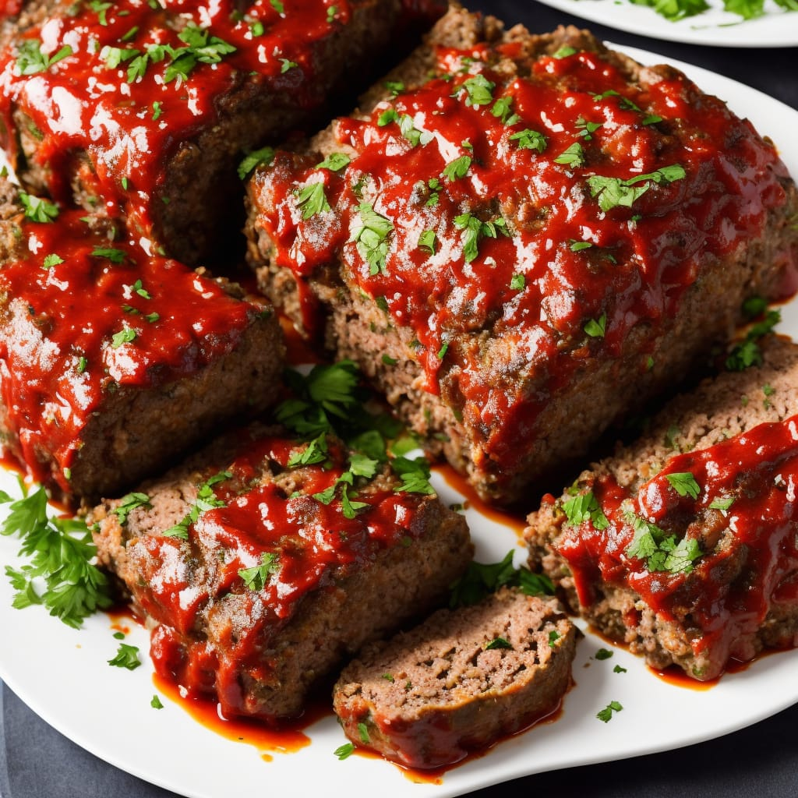

Venison Meatloaf

Description
This venison meatloaf is a yummy and moist version of meatloaf with a bit of a kick. Use more or fewer spices to suit your taste. I like it as-is!
Prep Time:
15 mins
Cook Time:
50 mins
Total Time:
1 hr 15 mins
Servings:
4
Ingredients
- 1 pound ground venison
- 8 saltine crackers, crumbled
- 1 large egg, beaten
- 2 tablespoons brown sugar, divided
- 1/2 teaspoon spicy brown mustard
- 1/2 teaspoon garlic powder
- 1/2 teaspoon dried minced onion flakes
- 1/4 teaspoon dried cilantro
- 1/4 teaspoon ground thyme
- 1 dash cinnamon
- 1 dash paprika
- 3 tablespoons ketchup